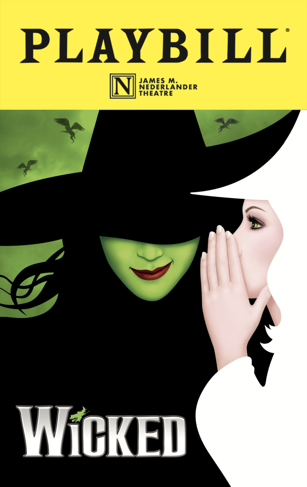
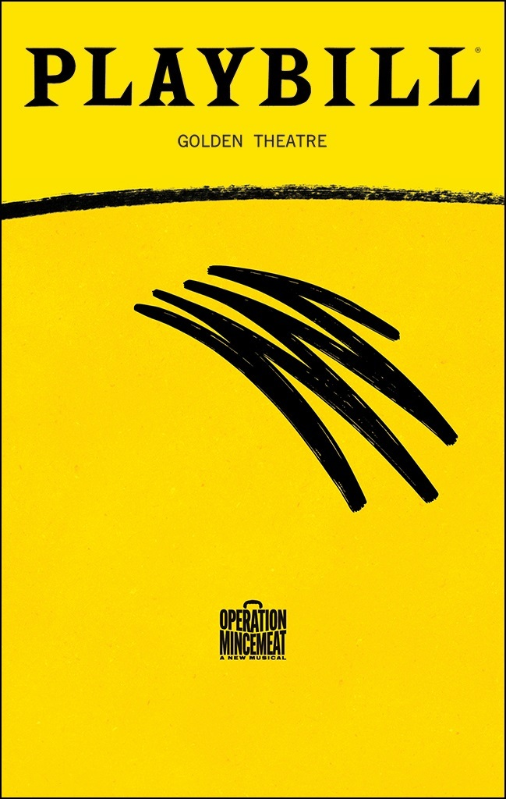
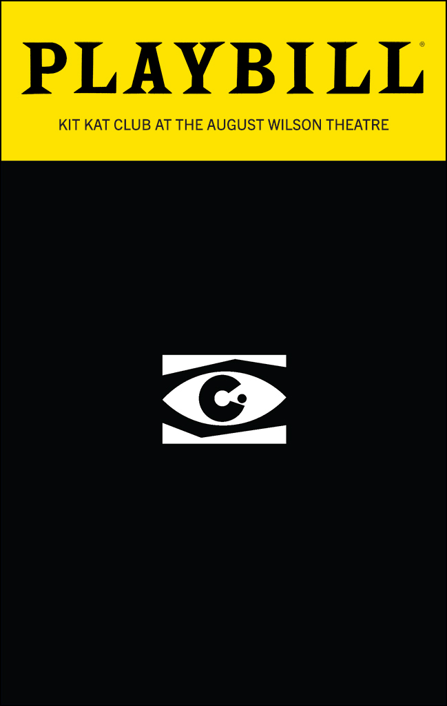

Your go-to guide for what is worth your precious time and money spent in "The City That Never Sleeps!"
Must Sees

Wicked
98% Positive Reviews
Reviews: A Broadway must that has only grown in popularity over the recent movie adaptations. Wicked remains a classic story and entertaining show that spins everything audiences think they know about the land of Oz. Audiences love the wide variety of songs, powerful vocals, and dazzling costumes & coreography.
Hamilton
98% Positive Reviews
Reviews: One of the most iconic and recognizable musicals of the 21st century! Lin Manuel-Miranda's third major Broadway musical is still selling out 10 years after its first performance! Audiences love the modern, hip-hop retelling of the stories about our nation's founding fathers with dazzling coreography throughout!
Maybe Happy Ending
97% Positive Reviews
Reviews: Audiences rave over the new, whimsical musical that earned it's Best Musical Tony. The simple yet heartwarming plot, accompanied by impressive robotic acting, makes Maybe Happy Ending a pleasant show with a love story that will restore your faith in humanity.
Mostly Positive

Operation Mincemeat
90% Positive Reviews
Reviews: A hilarious British Musical that sheds light on such an important mission in WW2! Although some audiences find the British accents hard to understand at times, this show is jam packed with humor. With constant costume changes and impressive prop/scene work, you are always on the edge of your seat and laughing from beginning to end! Even while being such a powerful comedy, Operation Mincemeat knows how to balance the mood with a few powerful ballads and right the moral wrongs of the original operation.
Death Becomes Her
94% Positive Reviews
Reviews: This musical is a movie adaptation done right! It's humor, wit, and special effects make it a good time! Some audiences find the story a bit lack-luster and the music forgettable, but the performances of the two leading ladies makes it a fun and laugh-filled experience for any audience member!
Mixed Reviews

Cabaret
90% Positive Reviews
Reviews: In the beginning of their run, reviews were fantastic for this long-awaited arrival. However, reviews have dropped since Billy Porter joined the cast. Now at the time of writing, Cabaret is now closed due to this recent turn in reviews and attendence.
Moulin Rougue
87% Positive Reviews
Reviews: Jukebox musicals are always tough to pull off, but Moulin Rougue makes a good effort at puttig on a fun spectacle full of songs everyone will know! Many criticize it's overly dramatic nature with a low stakes plot, but any Millenial or Gen Z audience member will know nearly every song! Although turning Katy Perry's Firework into a power ballad doesn't quite land, the remixes of songs like "Crazy" & "Rolling in the Deep" and "Shut Up and Dance" & "Raise Your Glass" with impressive coreography make this show a good time from curtain rise to fall!